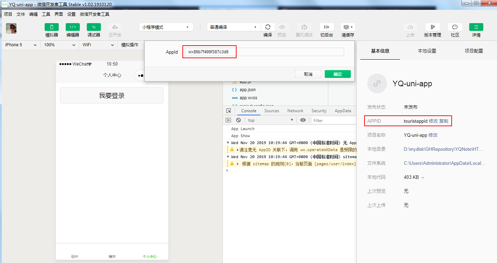
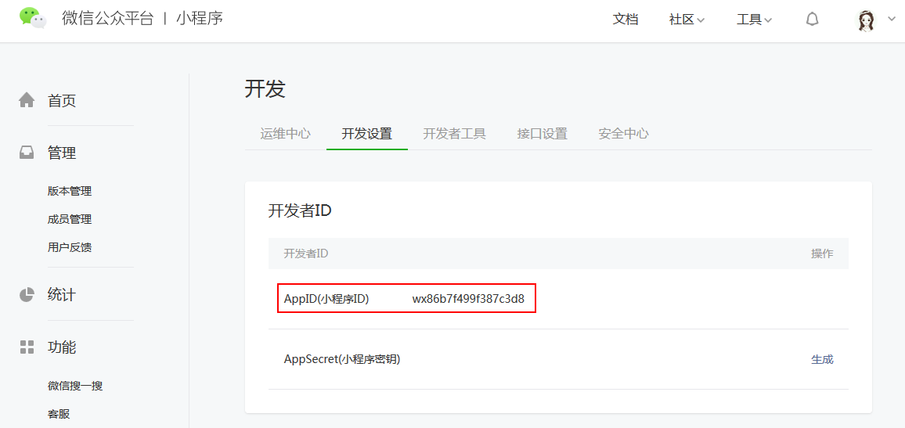
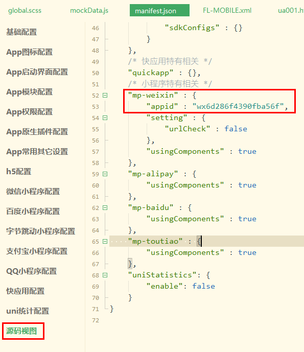

解决登录用户不是该小程序的开发者的方法：将开发小程序的APPID改成小程序的APPID即可
 uniapp运行到微信开发者工具报错“更改appid失败touristappidError:tourist appid”
找到文件 manifest.json, 点击“源码视图”, 找到微信小程序节点, 设置 "appid" 后, 完全关闭微信开发者工具再次通过HBuilder启动, 即可完美解决
当wx.showLoading 和 wx.showToast 混合使用时，showLoading和showToast会相互覆盖对方，调用hideLoading时也会将toast弹窗隐藏掉。（微信开发者工具中是正常的，只有真机中会出现这种问题）
这个问题的出现，其实是因为小程序将Toast和Loading放到同一层渲染引起的